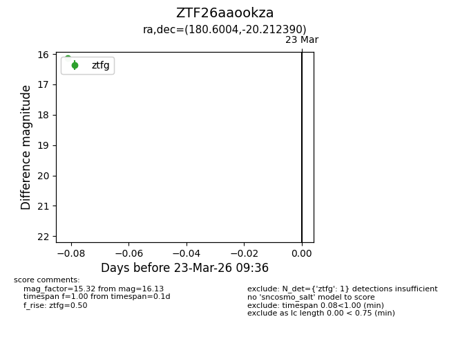
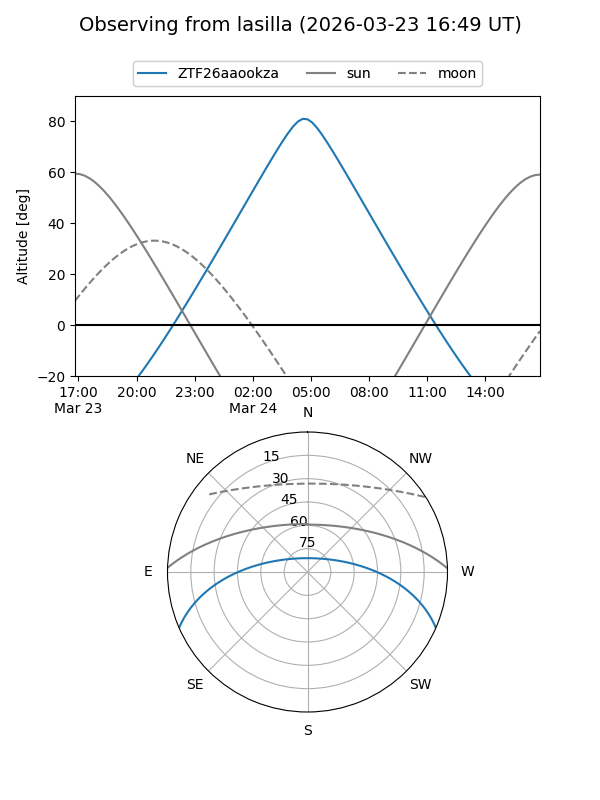
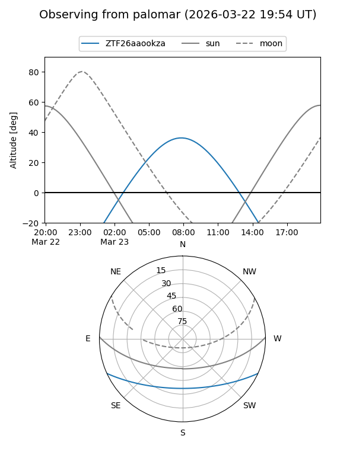

ZTF26aaookza
Target ZTF26aaookza at 2026-03-23 09:38
Aliases and brokers:
FINK: link
Lasair: link
ALeRCE: link
alt names
ZTF26aaookza (ztf,fink_ztf)
Coordinates:
equatorial (ra, dec) = 180.6004,-20.21239
equatorial (HMS+DMS) = 12:02:24.10,-20:12:44.60
galactic (l, b) = (287.5773,+41.19274)
Flags:
Photometry:
last ztfg=16.13
1 ztfg detections
Lightcurve

Visibility


Additional plots